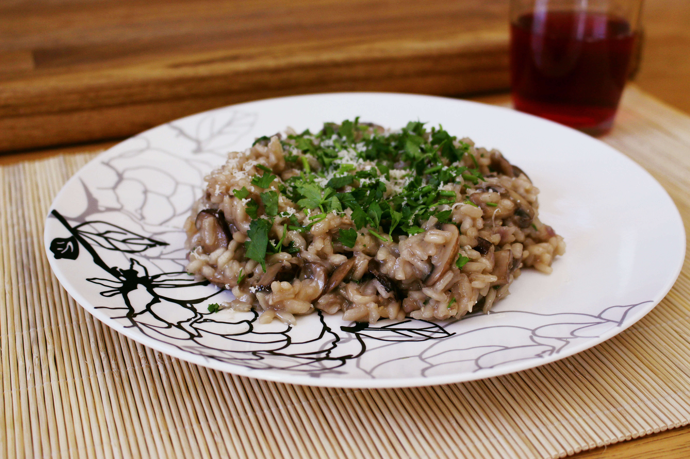

Mushroom Risotto

Gourmet Mushroom Risotto, Very Tasty and Quick To Make
Ingredients
- 50g dried porcini mushrooms
- 1 vegetable stock cube
- 2tbsp virgin olive oil
- 2 tbsp mushroom ketchup
- 2 large garlic cloves, finely chopped
- 1 onion, finely chopped
- 250g chestnut mushrooms, cleaned and sliced
- 300g arborio or cannoli rice
- Large (175ml) glass of white wine
- 25g butter
- Small handful flat parsley leaves, chopped
- 75g Parmigiano Reggiano (parmesan) or Grana Padano cheese
- A little salt and black pepper to season
Directions
- Put the dried mushrooms into a large bowl and pour over 750ml boiling water. Soak the mushrooms for 20 mins, then drain into a bowl, keeping the liquid, but discarding the last few tbsp of liquid left in the bowl. Crumble the vegetable stock cube into the mushroom liquid, then squeeze the mushrooms gently into the bowl, to remove any liquid. Finely chop the mushrooms.
- Heat the olive oil in a saute saucepan or deep frying pan over a medium heat. Fry the onions and garlic for 4-5 mins until soft. Add in the fresh and dried mushrooms, season with a little salt and black pepper and cook for a further 5-8 minutes, until the fresh mushrooms have softened.
- Tip the risotto rice into the pan and cook for 1 min, making sure that all of the rice has been coated with the oil. Pour in the wine and bring it to the boil so the alcohol evaporates. Reduce to a medium heat and pour in a quarter of the mushroom and vegetable stock, and the mushroom ketchup. Because the stock is hot already, it will start to simmer quickly. Simmer the rice, stirring often, until the rice has absorbed nearly all of the liquid. Add about the same amount of stock again and continue to simmer and stir. Do this again with another quarter of this stock and it should start to become creamy, plump and tender. Add the remaining stock, and by this time the rice should be almost cooke
- Continue stirring gently until the rice is cooked. If the rice has absorbed all of the stock and is still undercooked, add a splash of water. Remove the pan from the heat, add the butter and scatter over two thirds of the cheese and the same with the parsley. Cover and leave for a 2-3 minutes so the rice can absorb any excess liquid as it begins to cool a little. Give the risotto a final stir, and serve with the remaining cheese and parsley.